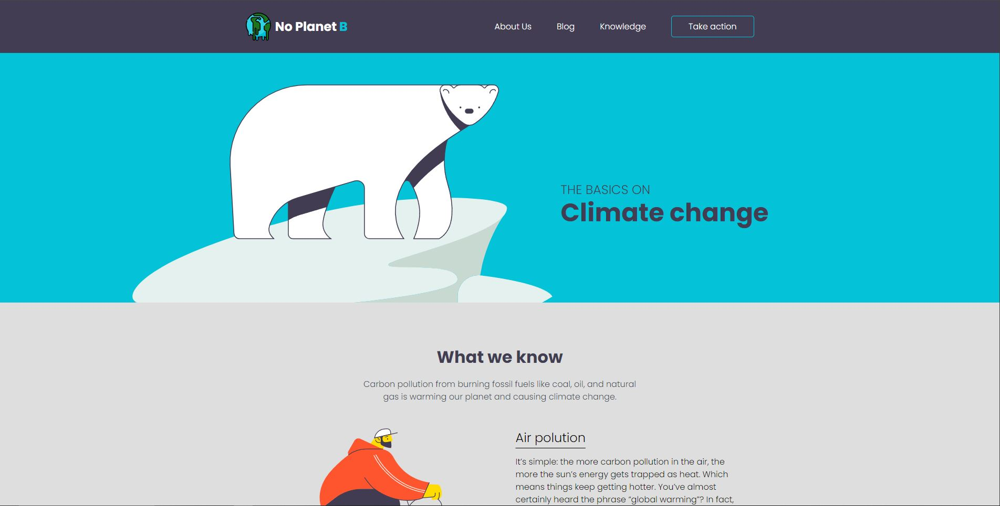

No Planet B
In dit project heb ik een webpagina ontwikkeld als onderdeel van een schoolopdracht, waarbij ik zowel een bestaande pagina nabouwde als een nieuwe pagina ontworpen. In het eerste deel van de opdracht lag de focus op het zorgvuldig nabouwen van een webpagina op basis van een aangeleverd ontwerp. Dit omvatte het toepassen van semantische HTML, het gebruik van Flexbox voor een responsieve layout, en het implementeren van CSS-transities en media queries om de pagina visueel aantrekkelijk en functioneel te maken.
Go Back